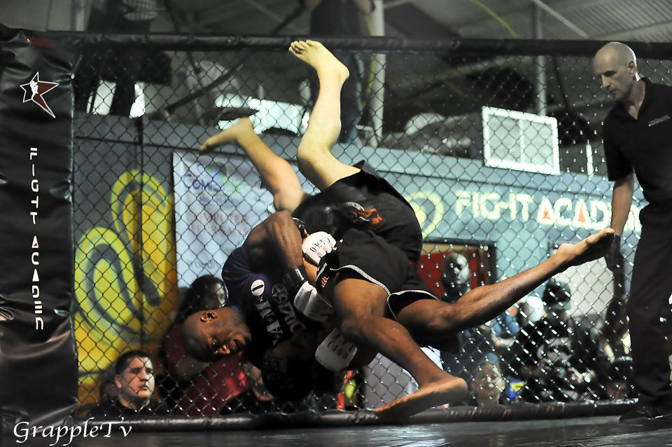

MMA Official 2 Certification Course
Classroom lecture and written testing covers all aspects of being a licensed referee including event logistics. Herb’s classroom presentation covers
referee duties, safety, applying the ABC Unified Rules. Mechanics are reviewed with in the cage demonstration. Event video is presented for examples,
discussion and calibration of applying the Unified Rules.

Curriculum
Learn from veteren UFC referee Herb Dean. He will teach ABC Unified Rules, Ethics, Duties, Bout results, Event Logistics, In the cage demonstration of referee mechanics, Student demonstration of MMA techniques
Written and video and technique tests